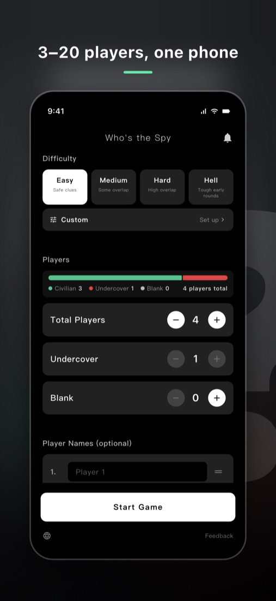
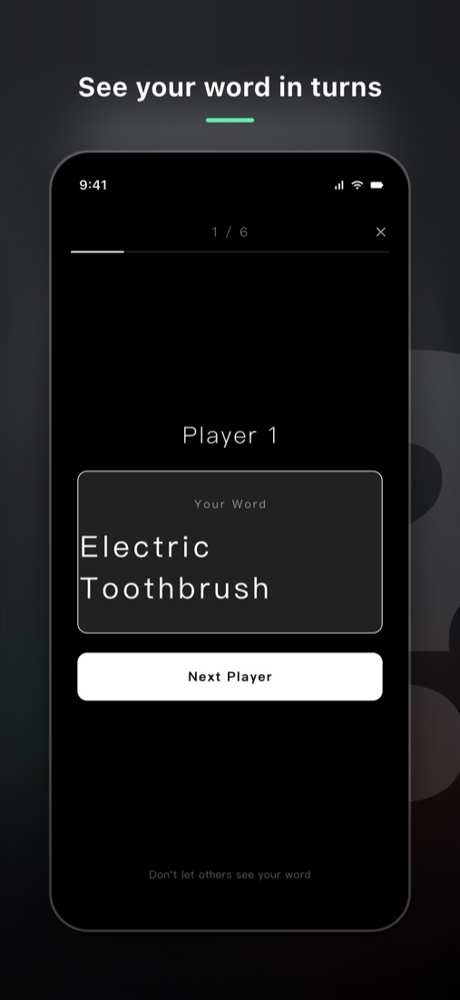
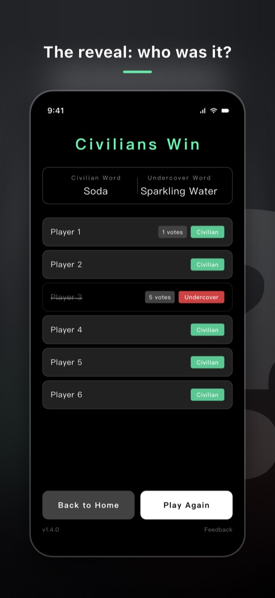

Who's the Spy?
A party game played on one phone
Everyone gets a similar word, but the spy's word is different. Describe yours in one sentence, then vote out the spy. 3 to 20 players, no internet needed, ready for parties, family dinners and icebreakers.
Download on the App Store


How to play Who's the Spy
Everyone gets a word. A few players get a word that is similar to everyone else's, but not the same. Players with the shared word are civilians; players with the different word are spies. Take turns describing your word and use everyone's clues to find the spies. The game is also known as Undercover, and it plays like an imposter word game where even the spy doesn't know who they are at first.
- Set the total players, spies and blanks, then tap Start.
- Pass the phone around. Each player taps to see their word, hides it, and passes the phone on.
- In speaking order, each player describes their word in one sentence without saying it.
- After each round of clues, vote to eliminate the most suspicious player.
- Repeat clues and votes until one side wins.
For example, civilians get "Seal" and the spy gets "Sea Lion". "Lives by the sea" fits both, but a more specific clue can give someone away.
Three roles
- Civilian: shares the same word with most players and must find the spies.
- Spy (shown as Undercover in the app): gets a similar but different word, and must stay hidden to the end. Spies don't know they are spies at first; they work it out from other players' clues.
- Blank: gets no word, listens to the clues and tries to blend in. Blanks are on the civilians' team. In host voting mode, a blank who is voted out gets one guess at the civilian word and wins alone if it's right.
Winning
- All spies are eliminated: civilians win.
- Surviving spies equal or outnumber civilians plus blanks: spies win.
How many players and spies
The app supports 3 to 20 players. Spies must be fewer than half of all players, and there can be up to 2 blanks. A good setup for your first game:
| Players | Spies | Blanks |
|---|---|---|
| 3–5 | 1 | 0 |
| 6–8 | 1–2 | 0–1 |
| 9–12 | 2–3 | 1 |
| 13–20 | 3–5 | 1–2 |
More spies and closer words make it harder for civilians. To balance a game, change the difficulty before adding spies.
Difficulty and example word pairs
2,034 built-in word pairs across four difficulty levels, plus your own custom pairs:
| Difficulty | How different the words are | Examples |
|---|---|---|
| Easy | Clearly different | Thunder / Lightning, Night Market / Bazaar |
| Medium | Some overlap | Envelope / Postcard, Newspaper / Magazine |
| Hard | Very close | Chewing Gum / Gummy, Metro Card / Credit Card |
| Hell | Nearly impossible to tell apart for the first two rounds | Envelope / Red Envelope, Food Delivery / Courier |
Inside jokes, coworkers' names, classroom topics: add them under the Custom difficulty, and the game will only use the pairs you created.
Two voting modes
Host voting
Everyone discusses or votes by show of hands, then whoever holds the phone taps the player to eliminate. Fast and great for face-to-face groups. Blanks who are voted out can guess the word.
Secret turn-based voting
The phone goes to each surviving player for a secret vote, and the most-voted player is out. On a tie, the other players vote again among the tied players; if it's still tied, one of them is eliminated at random.
Price
Free to download, with 30 word pairs per difficulty to start. Custom pairs are free. The full version is a one-time purchase that unlocks every word pair and removes ads; use Restore Purchases in the app on a new phone.
FAQ
What are the rules for clues?
Never say your word. It's also best not to use part of the word or translate it into another language, because that makes it too easy to guess.
Is this the same game as Undercover or Imposter?
Yes. Who's the Spy is the classic pass-the-phone word game that many groups know as Undercover or a word imposter game. It comes from the Chinese party game 誰是臥底 (Shéi shì wòdǐ), and in Japan the same idea is called Word Wolf (ワードウルフ). Unlike Spyfall, where the spy has no information, every spy here gets a word that is close to the civilians' word, so even the spy has to work out who they are.
Does everyone need the app?
No. One phone is enough; pass it around so each player can see their word.
Is there an Android version?
The Android version is on its way. A Google Play link will appear here once it launches.